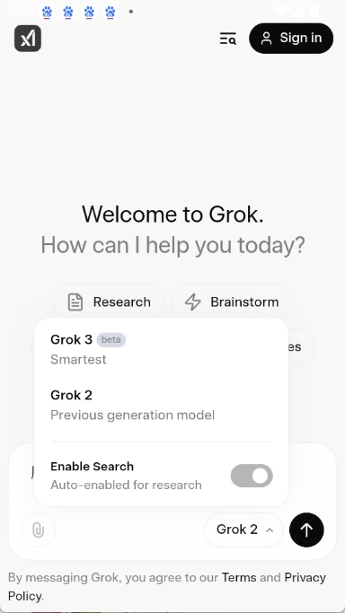
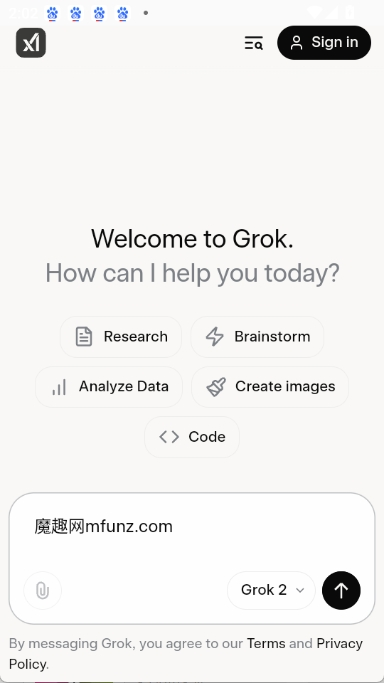

Grok AI 对比实测：X 生态加持下的 AI 聊天工具到底值不值
从实时数据、语音人格到图像生成，深度对比 Grok 与同类 AI 聊天工具的差异化优势和使用取舍，帮你判断它是不是你的菜。
先摆个坐标：AI 聊天工具江湖里，Grok 站在哪
如果你用过三四个以上的 AI 聊天工具，会发现一个有意思的现象——大部分工具都在比模型能力、比多模态、比上下文窗口，而 Grok 走的是一条完全不同的路：它不只是一个聊天界面，而是 X（原 Twitter）生态的 AI 神经中枢——去它的grok AI官网瞄一眼就能感受到这种定位。
这也是我想单独写它的原因。同类工具里，Claude 靠长上下文和文档理解站稳脚，GPT 靠插件生态和老牌先发优势，Gemini 靠 Google 全家桶联动。Grok 的差异化，从它上线第一天起就写在了基因里——实时接 X 的公开数据流，特斯拉车机集成，xAI 自家模型迭代。这些特性没有一个是别家能直接抄的。
但话说回来，背靠 X 生态既是护城河也是包袱。国内用户想用 Grok 得绕海外网络环境，订阅体系也是国际化的 SuperGrok，和国内支付渠道完全脱节。写这篇评测就是想把这些摆到台面上，帮你判断：Grok 到底是不是你的菜。
差异化：三个别家做不到的点
实时数据接入，这是独一份的
绝大多数 AI 聊天工具的训练数据有截止日期，问它昨天发生了什么、某个实时话题的最新进展，它要么答不上来要么给你旧闻。Grok 不一样，它直接接 X 的公开数据流，问它「今天股市怎么样」「X 上大家都在讨论什么」，它给的不是训练记忆里的答案，而是实时抓取的内容。
这个能力在某些场景下是刚需。做舆情监测、追热点事件、了解最新技术动态，Grok 给你的是活的信息流，而不是模型的知识快照。当然，实时性也意味着它偶尔会被 X 上的噪音带偏——我试过让它总结一条热门帖的回复，它有时会把高赞但不严谨的回答当成事实。所以实时性强不代表答案一定准，但至少它在给你最新的东西，这点没有竞品能做到。
语音交互做到「人格」级别，不是简单的换声音
我试过大大小小七八款带语音的 AI 工具，大部分的语音功能就是文字转语音，换个音色就算个性化了。Grok 的 Voice Mode 是真的在做交互——它有三层定制：选声音（男声/女声/卡通/机器人）、调速和风格（语速/语言/口音）、最后选人格。
人格这层是最有意思的。默认的 Assistant 专业中立，适合工作场景；Storyteller 会把知识讲成故事，睡前听几段挺惬意；Unhinged 放飞自我敢说敢接梗，头脑风暴的时候用特别爽；Meditation 是平静引导式的，堵车时跟它聊两句能减压。最绝的是可以临时切换——不用进设置菜单，直接语音说「切换到 Storyteller 模式」，当前对话里立刻生效。

这个设计背后是对语音交互的深度理解——语音不是文字交互的附属品，而是不同场景下的独立交互模式。通勤路上语速调快赶时间，学习时语速放慢方便记笔记，这些小细节在同类工具里几乎看不到。特斯拉车载版本还专门针对驾驶场景做了人格优化，回答更短更直接，不会长篇大论分散注意力。
Aurora 图像生成：提示词模板库是真能用
图像生成这块我用过 DALL·E、Midjourney、SD，普遍痛点是提示词难写——每次都要从零开始想怎么描述，试好几次才能出一张满意的。Grok 的 Aurora 图像生成给了一个现成的模板库，按场景分了人像、产品、风景、社媒配图、艺术创作五大类，一共十四个模板。这些模板和配套的迭代流程，在grok AI文档里写得更详细。
这些模板不是随便写的占位符，每个都留了明确的变量位置。比如 LinkedIn 专业头像模板，你只需要替换性别年龄、发色发型、背景色这几个变量，就能出一张构图合格的专业头像。迭代流程也写得很清楚——第一次给完整提示词出初稿，第二次只改 1-2 个变量优化，第三次微调细节。这个「每次只改一两个」的原则听起来简单，但踩过坑的人都知道，一次改太多变量根本不知道是哪一步起了作用。
取舍：为这些优势付出的代价
说了这么多好话，该泼点冷水了。Grok 的生态绑定带来了优势，也带来了几个绕不开的门槛。
最大的门槛是网络环境。Grok 的官方服务器在海外，安装包从官方下载拿最稳妥——国内用户想用就得能稳定访问海外网络。App Store 还好，用海外 Apple ID 就能搜；Google Play 需要对应地区账号，有些用户得靠加速器才能装上。账号注册倒是灵活，海外手机号或邮箱都行，但 SuperGrok 订阅只支持海外信用卡或国际支付方式，国内信用卡直接拒付。
第二个门槛是国内生态的缺失。Grok 接的是 X 的数据流，对国内用户来说，X 本身就不是日常信息源。你问它「微博上今天有什么热点」，它答不了；问它「国内股市情况」，它的数据链路也是隔一层的。在信息获取的实时性上，国内工具反而更有优势——比如某度的豆包接自家搜索数据，对国内热点的响应速度比 Grok 快得多。
还有一个容易忽略的点：Grok 的更新频率很高，2026 年初有过每周发 2-3 次小版本的情况。这本身是好事，但意味着如果你不开自动更新，很快就会错过新功能。而且不同地区、不同账号池的灰度进度不一样，有些声音包、人格选项可能你选不到，不是你操作错了，是还没推送到你这边。

选购结论：什么人选它，什么人选别的
说了这么多，给一个明确的推荐吧。
选 Grok 的情况：你是 X 的重度用户，或者你的工作需要实时追踪海外信息源；你喜欢语音交互，愿意花时间调人格和声音配；你已经在特斯拉生态里，或者对 xAI 系产品有偏好。SuperGrok 订阅费用在同类付费工具里不算贵，如果你已经有海外支付渠道，性价比不错。
不选 Grok 的情况：你主要关注国内信息源，X 的实时性对你没用；你不想折腾海外网络环境和支付；你的使用场景是长文档理解或代码辅助——这些领域 Claude 和 GPT 各有专长，Grok 不是最优解。
最后说一句实在的：Grok 不是完美的 AI 聊天工具，但它是同类里唯一一个在「把 AI 和社交生态深度绑定」这件事上走通的产品。这条路走通了，它就是 X 生态里每个人都离不开的 AI 助手；走不通，它可能就会变成一个功能不错但缺乏灵魂的聊天工具。就目前来看，我倾向于前者。
这套 Grok 的使用资料我在三个仓库都做了备份，GitHub 那份是最及时的更新源，Gitee 适合国内网络环境下克隆，GitCode 是额外的灾备副本。如果官方文档站打不开，去仓库拉一份下来本地看也很方便。